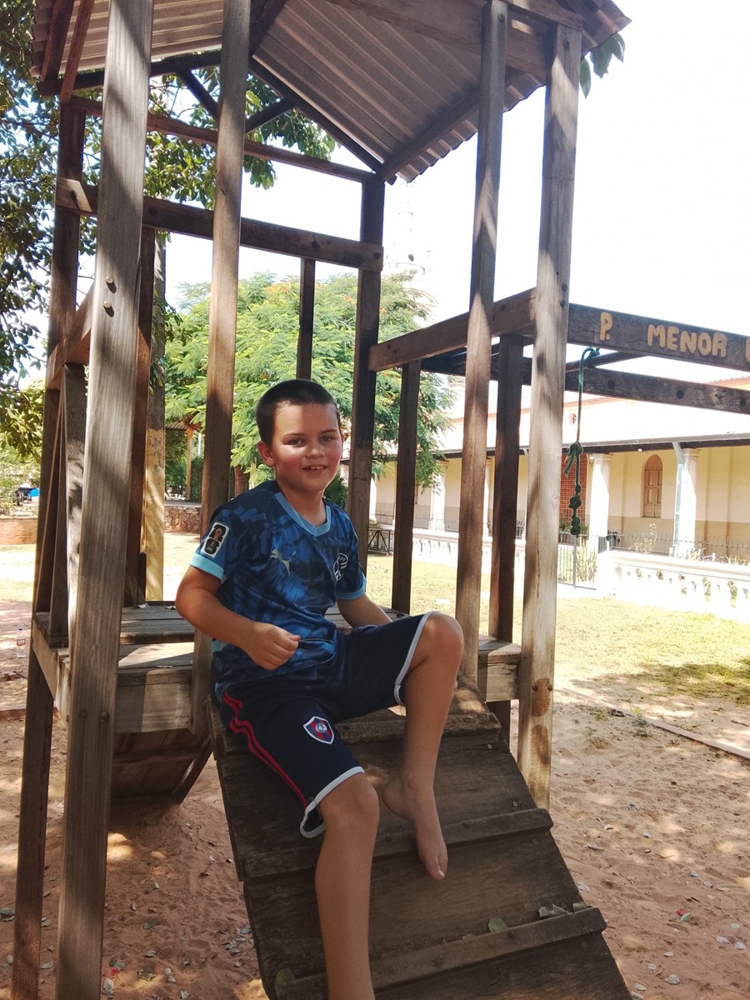

What Residential Caregivers Need to Understand About Autism and Safety
What families can ask about the knowledge and everyday systems behind dependable care.

Residential caregivers need to understand how each autistic adult communicates, what support they need in ordinary situations, and how to recognize when something has changed. Autism awareness is a starting point. Safe care also requires person-specific knowledge, practical training, clear responsibilities, and a way to get help when a situation exceeds a worker’s competence.
Families often know hundreds of small details without thinking about them. A new caregiver cannot be expected to discover every important detail through trial and error. Nor should a family summary become an unchangeable set of assumptions about an adult who continues to learn, choose, and change.
A useful question for a provider is: “How will the next person on shift know what support works for this adult, and how will you check that they can provide it?”
Start with communication, including disagreement
Knowing that someone is nonspeaking does not tell a caregiver how they communicate. Record how the person requests help, declines an activity, asks for a break, and signals discomfort. Include the communication tools they use and the assistance needed to keep those tools available.
Make room for uncertainty. A supporter might observe that someone turns away during a particular task. That observation matters, but it does not establish the reason. Ask, observe, and seek qualified communication support rather than treating a guess as a settled fact.
The U.S. Administration for Community Living describes person-centered planning as directed by the person receiving support, with participation supported even when a representative is involved. A practical implication for staff is to learn from the adult, not only from the file.
When a person may leave without the support needed to stay safe, the caregiver also needs a specific prevention and response plan. Preventing Elopement in Homes for Autistic Adults covers that planning in detail. A diagnosis alone does not tell staff whether this risk applies.
Learn what an ordinary day looks like
An introduction should explain more than risks. What does the adult enjoy? How do they prefer to begin the day? Which familiar people, activities, and places matter? What help is welcome, and which tasks do they want to do themselves?
These details give staff a useful baseline. They also reduce the temptation to design each day around the convenience of a shift. A home can be orderly while still offering choices about meals, rest, company, and activities.
Consider a hypothetical handoff. “Likes music” leaves almost everything open. “Ask which playlist they want, keep the volume at the level they choose, and respect their signal to stop” gives a new worker something to do while preserving the person’s choice. The exact instructions must come from the individual, not from this example.
Notice the setting before increasing demands
Busy rooms, unexpected touch, unfamiliar people, or changes to a routine may need discussion in an individual’s plan. Different adults will have different preferences; a quiet room is not automatically helpful if someone experiences it as isolating or cannot leave when they want.
NICE’s adult autism recommendations address environmental adaptations and collaboration between residential staff and specialist services. They are UK guidance. Families elsewhere can use them to frame questions, while checking local requirements separately.
Ask a provider how workers learn to offer a pause or a change of setting without turning it into punishment. Also ask who can review an arrangement that repeatedly leaves the adult distressed. Staff should have a route to request help rather than simply repeating an unsuccessful approach more forcefully.
The playground outside the basilica in Itauguá is one example from our own travels. It was rundown, with exposed bolts and broken wood. We have often spent time in lower-income areas, so navigating worn playground equipment was not new to Sam. It is a very different experience from what I would expect at a playground in the United States. I do not need to turn that into a parenting philosophy. For caregivers, the useful point is to pay attention to the actual surroundings and the support the person needs. Navigating an existing environment does not make broken equipment an acceptable design choice for a residential home.
Know the boundaries of the caregiver’s role
A worker should know where to find current health and care instructions, which tasks they are trained and authorized to carry out, and whom to contact with a concern. The required training depends on the adult and the services being provided. One general autism course cannot establish competence for every health-related task.
New or significant changes in someone’s condition deserve appropriate assessment. Avoid dismissing pain, illness, or unusual distress as an expected feature of disability. Caregivers should follow the person’s current escalation instructions and contact emergency services when there is immediate danger.
Families can ask: Who writes and reviews the instructions? How are changes communicated? What happens if the responsible professional cannot be reached? Does an unfamiliar worker know their limits, or feel pressure to manage alone?
This article is not a clinical protocol. Medication, eating and drinking support, seizures, mobility, and other individual health needs require the relevant professional guidance and training.
Make coverage and handoffs explicit
Safety can become unclear at ordinary moments: transport arrives, a visitor opens a door, someone takes a break, or one shift ends. A general statement that staff are “always available” does not explain who is responsible at those moments.
Ask for a walkthrough of a typical handoff. What current information is shared? How does the incoming worker confirm they have taken responsibility? Who provides cover while another resident needs private assistance? What is the backup when a scheduled worker does not arrive?
What Does 24-Hour Support Actually Look Like? helps families distinguish a reassuring phrase from the practical coverage needed at different times of day. Do not assume that one staffing arrangement suits every household.
A useful handoff note might include the adult’s choices for the next part of the day, a change that needs watching, the agreed response, and an outstanding task with a named owner. Keep sensitive details limited to people who need them for their role.
Ask staff to demonstrate, not just confirm attendance
A training record can show that somebody attended a session. Families can also ask how the provider checks that learning transfers to everyday care. Appropriate checks might include a supervised introduction, discussion of a realistic scenario, or a worker showing where to find the current plan.
Questions worth asking include:
- Can the worker explain how this adult communicates “no” or “help”?
- Do they know whom to contact when instructions are unclear?
- Can they describe the agreed handoff and emergency roles?
- How are temporary and overnight workers introduced to the adult?
- Who checks that training stays current when the person’s needs change?
- Can staff raise a concern about an unsafe practice without being dismissed?
Do not turn the adult into an unannounced training exercise or create distress to test a response. Competence checks should respect their comfort, privacy, and involvement.
What You Can Do This Week
With the adult, create a short “getting to know me” page. Include one preferred activity, how they communicate a choice, one piece of assistance that needs explaining, and where authorized supporters can find fuller instructions.
Ask a provider to describe one handoff and one training check. If the answer is vague, choose a concrete follow-up: the name of the person responsible, the document to review, or a supervised introduction to arrange.
Finally, check that the adult has an accessible way to say when support is not working. A family contact is useful, but it should not be the only route for raising a concern.
Long-Term Questions
How will knowledge survive staff turnover? Who notices when the written plan no longer matches the person? Is there enough time for workers to learn from the adult, or are they expected to rush through tasks?
Ask how the service reviews near misses, complaints, and positive experiences. A useful review identifies changes to support, not just a person to blame. It should also ask what the adult wants to continue because it is working well.
Why Disability Support Plans Must Be Individualized is a useful next step for organizing these details. A good plan supports a relationship; it does not replace one.
About Casa de SAM
Casa de SAM is a developing vision for a lifelong residential community in Paraguay for adults with developmental disabilities who need ongoing support. It remains in its planning and organisational stage, with a long-term opening goal of 2035. It is not an operating care provider, is not yet a registered nonprofit, and is not currently accepting donations.
For a future community, dependable care would require people who know the residents, understand their responsibilities, and keep learning. Kind intentions matter. They need to be supported by practical systems that work on an ordinary shift.
Sources checked November 1, 2026. General educational guidance, not individual medical advice, a staff training certification, or a statement of local licensing requirements. The cited U.S. and UK resources are identified by jurisdiction. Confirm clinical tasks, safeguarding duties, staffing requirements, and decision-making arrangements with qualified local professionals.